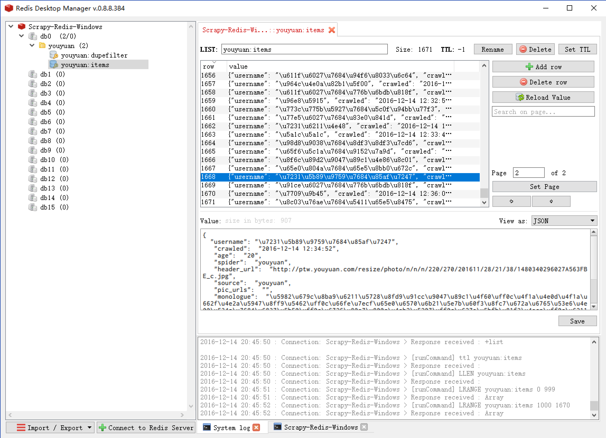

有缘网分布式爬虫案例：
# clone github scrapy-redis源码文件
git clone https://github.com/rolando/scrapy-redis.git
# 直接拿官方的项目范例，改名为自己的项目用（针对懒癌患者)
mv scrapy-redis/example-project ~/scrapy-youyuan
修改settings.py
下面列举了修改后的配置文件中与scrapy-redis有关的部分，middleware、proxy等内容在此就省略了。
# -*- coding: utf-8 -*-
# 指定使用scrapy-redis的调度器
SCHEDULER = "scrapy_redis.scheduler.Scheduler"
# 指定使用scrapy-redis的去重
DUPEFILTER_CLASS = 'scrapy_redis.dupefilter.RFPDupeFilter'
# 指定排序爬取地址时使用的队列，
# 默认的 按优先级排序(Scrapy默认)，由sorted set实现的一种非FIFO、LIFO方式。
SCHEDULER_QUEUE_CLASS = 'scrapy_redis.queue.SpiderPriorityQueue'
# 可选的 按先进先出排序（FIFO）
# SCHEDULER_QUEUE_CLASS = 'scrapy_redis.queue.SpiderQueue'
# 可选的 按后进先出排序（LIFO）
# SCHEDULER_QUEUE_CLASS = 'scrapy_redis.queue.SpiderStack'
# 在redis中保持scrapy-redis用到的各个队列，从而允许暂停和暂停后恢复，也就是不清理redis queues
SCHEDULER_PERSIST = True
# 只在使用SpiderQueue或者SpiderStack是有效的参数，指定爬虫关闭的最大间隔时间
# SCHEDULER_IDLE_BEFORE_CLOSE = 10
# 通过配置RedisPipeline将item写入key为 spider.name : items 的redis的list中，供后面的分布式处理item
# 这个已经由 scrapy-redis 实现，不需要我们写代码
ITEM_PIPELINES = {
'example.pipelines.ExamplePipeline': 300,
'scrapy_redis.pipelines.RedisPipeline': 400
}
# 指定redis数据库的连接参数
# REDIS_PASS是我自己加上的redis连接密码（默认不做）
REDIS_HOST = '127.0.0.1'
REDIS_PORT = 6379
#REDIS_PASS = 'redisP@ssw0rd'
# LOG等级
LOG_LEVEL = 'DEBUG'
#默认情况下,RFPDupeFilter只记录第一个重复请求。将DUPEFILTER_DEBUG设置为True会记录所有重复的请求。
DUPEFILTER_DEBUG =True
# 覆盖默认请求头，可以自己编写Downloader Middlewares设置代理和UserAgent
DEFAULT_REQUEST_HEADERS = {
'Accept': 'text/html,application/xhtml+xml,application/xml;q=0.9,image/webp,*/*;q=0.8',
'Accept-Language': 'zh-CN,zh;q=0.8',
'Connection': 'keep-alive',
'Accept-Encoding': 'gzip, deflate, sdch'
}
查看pipeline.py
# -*- coding: utf-8 -*-
from datetime import datetime
class ExamplePipeline(object):
def process_item(self, item, spider):
#utcnow() 是获取UTC时间
item["crawled"] = datetime.utcnow()
# 爬虫名
item["spider"] = spider.name
return item
修改items.py
增加我们最后要保存的youyuanItem项，这里只写出来一个非常简单的版本
# -*- coding: utf-8 -*-
from scrapy.item import Item, Field
class youyuanItem(Item):
# 个人头像链接
header_url = Field()
# 用户名
username = Field()
# 内心独白
monologue = Field()
# 相册图片链接
pic_urls = Field()
# 年龄
age = Field()
# 网站来源 youyuan
source = Field()
# 个人主页源url
source_url = Field()
# 获取UTC时间
crawled = Field()
# 爬虫名
spider = Field()
编写 spiders/youyuan.py
在spiders目录下增加youyuan.py文件编写我们的爬虫，之后就可以运行爬虫了。 这里的提供一个简单的版本：
# -*- coding:utf-8 -*-
from scrapy.linkextractors import LinkExtractor
from scrapy.spiders import CrawlSpider, Rule
# 使用redis去重
from scrapy.dupefilters import RFPDupeFilter
from example.items import youyuanItem
import re
#
class YouyuanSpider(CrawlSpider):
name = 'youyuan'
allowed_domains = ['youyuan.com']
# 有缘网的列表页
start_urls = ['http://www.youyuan.com/find/beijing/mm18-25/advance-0-0-0-0-0-0-0/p1/']
# 搜索页面匹配规则，根据response提取链接
list_page_lx = LinkExtractor(allow=(r'http://www.youyuan.com/find/.+'))
# 北京、18~25岁、女性 的 搜索页面匹配规则，根据response提取链接
page_lx = LinkExtractor(allow =(r'http://www.youyuan.com/find/beijing/mm18-25/advance-0-0-0-0-0-0-0/p\d+/'))
# 个人主页 匹配规则，根据response提取链接
profile_page_lx = LinkExtractor(allow=(r'http://www.youyuan.com/\d+-profile/'))
rules = (
# 匹配find页面，跟进链接，跳板
Rule(list_page_lx, follow=True),
# 匹配列表页成功，跟进链接，跳板
Rule(page_lx, follow=True),
# 匹配个人主页的链接，形成request保存到redis中等待调度，一旦有响应则调用parse_profile_page()回调函数处理，不做继续跟进
Rule(profile_page_lx, callback='parse_profile_page', follow=False),
)
# 处理个人主页信息，得到我们要的数据
def parse_profile_page(self, response):
item = youyuanItem()
item['header_url'] = self.get_header_url(response)
item['username'] = self.get_username(response)
item['monologue'] = self.get_monologue(response)
item['pic_urls'] = self.get_pic_urls(response)
item['age'] = self.get_age(response)
item['source'] = 'youyuan'
item['source_url'] = response.url
#print "Processed profile %s" % response.url
yield item
# 提取头像地址
def get_header_url(self, response):
header = response.xpath('//dl[@class=\'personal_cen\']/dt/img/@src').extract()
if len(header) > 0:
header_url = header[0]
else:
header_url = ""
return header_url.strip()
# 提取用户名
def get_username(self, response):
usernames = response.xpath("//dl[@class=\'personal_cen\']/dd/div/strong/text()").extract()
if len(usernames) > 0:
username = usernames[0]
else:
username = "NULL"
return username.strip()
# 提取内心独白
def get_monologue(self, response):
monologues = response.xpath("//ul[@class=\'requre\']/li/p/text()").extract()
if len(monologues) > 0:
monologue = monologues[0]
else:
monologue = "NULL"
return monologue.strip()
# 提取相册图片地址
def get_pic_urls(self, response):
pic_urls = []
data_url_full = response.xpath('//li[@class=\'smallPhoto\']/@data_url_full').extract()
if len(data_url_full) <= 1:
pic_urls.append("");
else:
for pic_url in data_url_full:
pic_urls.append(pic_url)
if len(pic_urls) <= 1:
return "NULL"
# 每个url用|分隔
return '|'.join(pic_urls)
# 提取年龄
def get_age(self, response):
age_urls = response.xpath("//dl[@class=\'personal_cen\']/dd/p[@class=\'local\']/text()").extract()
if len(age_urls) > 0:
age = age_urls[0]
else:
age = "0"
age_words = re.split(' ', age)
if len(age_words) <= 2:
return "0"
age = age_words[2][:-1]
# 从age字符串开始匹配数字，失败返回None
if re.compile(r'[0-9]').match(age):
return age
return "0"
运行程序：
- Master端打开 Redis：
redis-server - Slave端直接运行爬虫：
scrapy crawl youyuan - 多个Slave端运行爬虫顺序没有限制。
